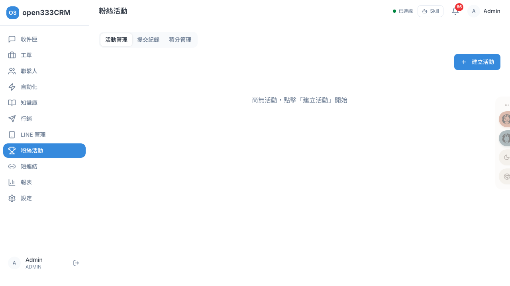
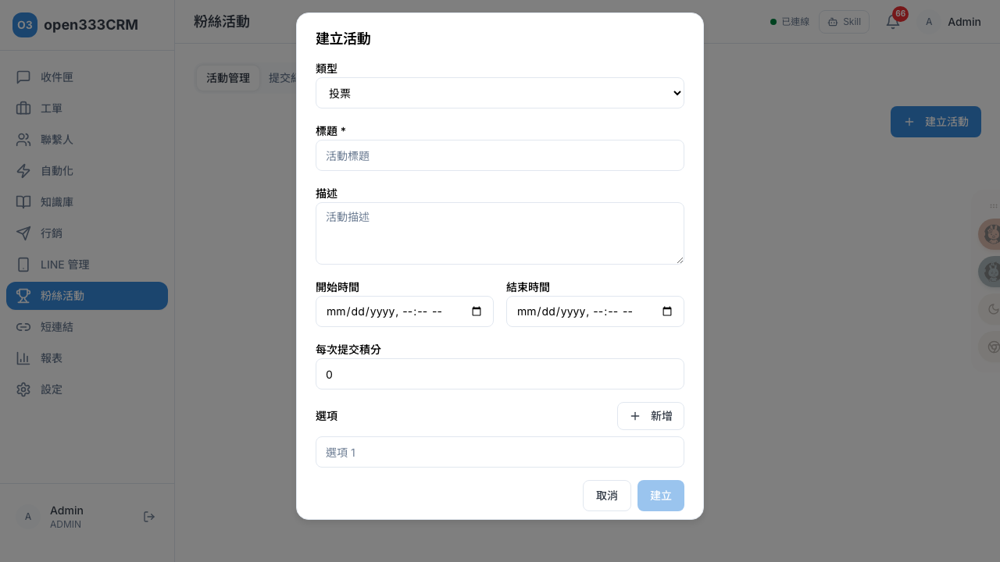

粉絲活動
辦投票、表單、競猜三種互動活動，讓粉絲參與、收集回饋，並用積分經營長期關係。活動可抽獎、可追蹤提交紀錄，參與者的積分也在這裡集中管理。
1 功能總覽
「粉絲活動」讓你辦線上互動活動、收集粉絲的參與與回饋，並用積分留住他們。頁面上方有三個分頁：活動管理（建立與管理活動）、提交紀錄（看誰參加了、填了什麼、抽獎）、積分管理（查詢與調整每位聯繫人的積分）。

三種活動類型
| 類型 | 適合場景 | 特點 |
|---|---|---|
| 投票（POLL） | 人氣票選、二選一、問卷式選擇 | 提供數個選項讓粉絲擇一投票 |
| 表單（FORM） | 報名、資料收集、意見蒐集 | 自訂多個欄位（文字／多行／Email／電話／日期／選單）與是否必填 |
| 競猜（QUIZ） | 問答挑戰、有獎徵答 | 類似投票，但每個選項可標記「正確」，能計分 |
2 活動管理
「活動管理」分頁以卡片列出所有活動，每張卡片右上角有一個狀態標籤，顯示這個活動目前處於哪個階段。活動有三個階段，一路往前不能回頭：
| 狀態 | 標籤 | 可做的操作 |
|---|---|---|
| 草稿 | 草稿 | 發布、編輯、刪除 |
| 進行中 | 進行中 | 結束 |
| 已結束 | 已結束 | （無操作按鈕） |
3 建立活動
點右上「建立活動」開啟對話框。先選類型，填標題（必填）即可建立；其餘欄位視需要填。新建立的活動一律是「草稿」，發布前不會被粉絲看到。

| 欄位 | 必填 | 說明 |
|---|---|---|
| 類型 | ✓ | 投票／表單／競猜，預設投票。建立後不可更改 |
| 標題 | ✓ | 活動名稱，粉絲會看到 |
| 描述 | 活動說明 | |
| 開始 / 結束時間 | 活動的預定期間（顯示用） | |
| 每次提交積分 | 粉絲每參加一次可獲得的積分，預設 0 | |
| 選項 （投票／競猜） | 預設一格空選項，按「新增」加更多。競猜類型每個選項旁多一個「正確」勾選，用來計分；選項超過一個時可用垃圾桶圖示刪除 | |
| 欄位 （表單） | 表單類型改為設計收集欄位：每列填「欄位 key」「顯示名稱」、選型態（文字／多行／Email／電話／日期／選單）、勾是否「必填」；按「新增」加欄位 |
填好按對話框內的「建立」，活動出現在列表、狀態為草稿。想再改內容，趁草稿階段點卡片上的「編輯」。
4 發布與結束
活動靠卡片上的按鈕推進狀態。這兩個動作都沒有二次確認、點下立即生效，操作前請確認。
| 目前狀態 | 按鈕 | 按下後 |
|---|---|---|
| 草稿 | 發布 | 立即上線，狀態變「進行中」，粉絲可開始參加 |
| 進行中 | 結束 | 立即關閉活動，狀態變「已結束」，不再收提交 |
刪除活動
只有草稿狀態的活動卡片才有「刪除」按鈕。點下會跳出「確定刪除此活動？」，確認後永久移除、無法復原。已發布或已結束的活動不提供刪除（保留參與與統計紀錄）。
5 提交紀錄與抽獎
切到「提交紀錄」分頁，先在「選擇活動」下拉挑一個活動，就會列出所有參加者的提交：聯繫人、提交時間、答案摘要，競猜類型還會顯示得分，並標示是否中獎、獲得的積分。
抽獎
選定活動後會出現「抽獎」按鈕。點開「隨機抽獎」對話框，填「抽出人數」再按「抽獎」，系統從提交者中隨機抽出中獎名單。
6 積分管理
「積分管理」分頁用來查詢與調整每位聯繫人的積分餘額。在搜尋框（搜尋聯繫人（名稱、電話、Email））輸入關鍵字、按搜尋，找到聯繫人後會顯示他目前的積分餘額，以及一張積分交易記錄表（時間、類型、金額、餘額、備註）。
| 交易類型 | 說明 |
|---|---|
| 活動參與 | 粉絲參加活動自動獲得（依活動的「每次提交積分」） |
| 人工調整 | 由客服手動加減（見下方） |
| 兌換扣除 | 兌換獎品等扣點 |
手動調整積分
找到聯繫人後點「手動調整」，在對話框填「調整金額」（正數加、負數扣）與「備註」（調整原因），按「確認調整」。這筆調整會即時反映在餘額，並留下一筆「人工調整」交易紀錄可追溯。